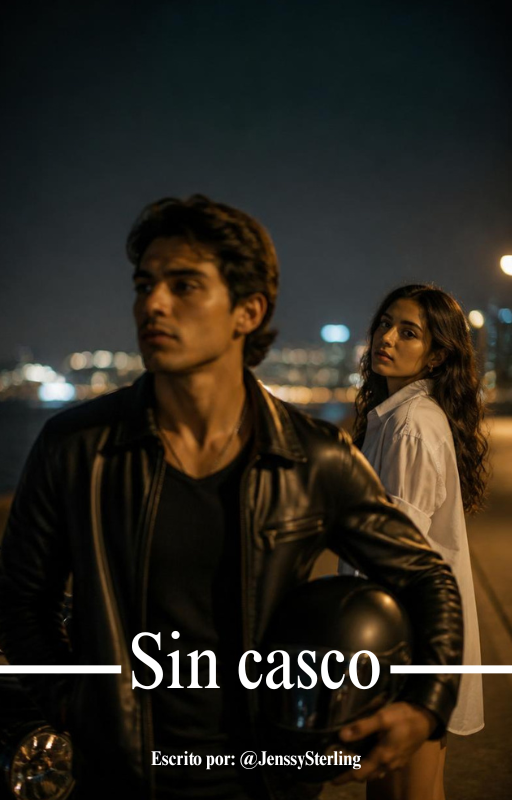
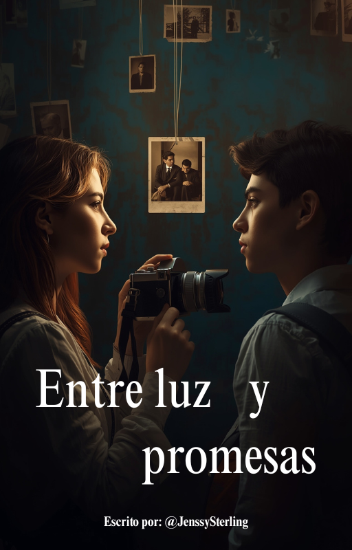
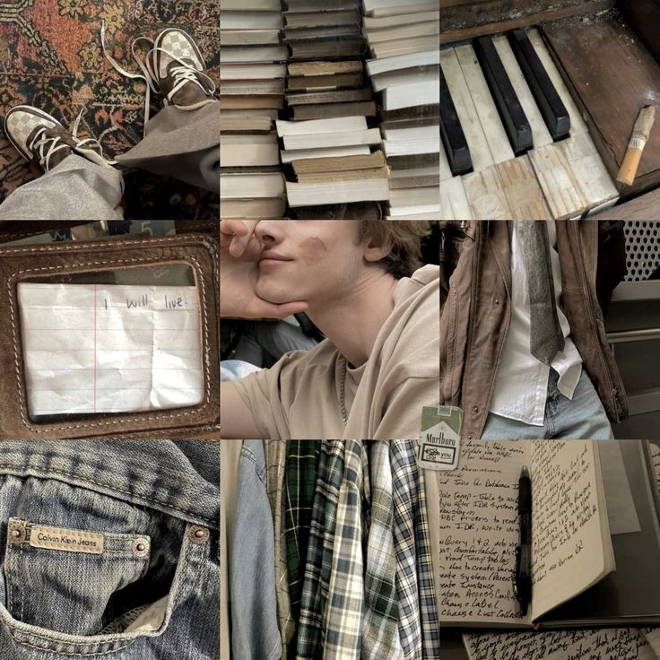
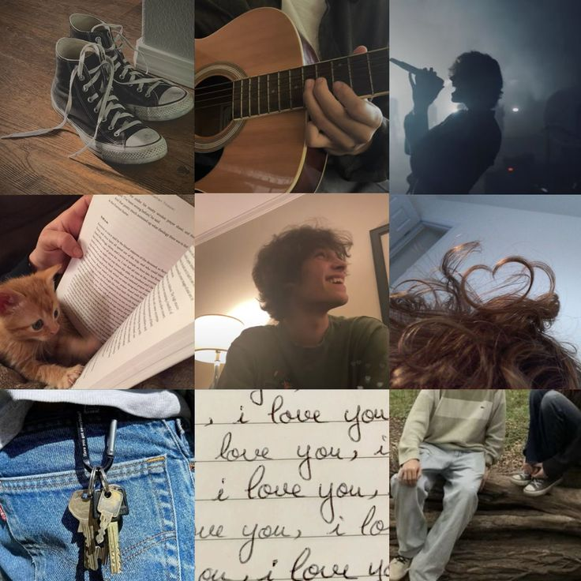
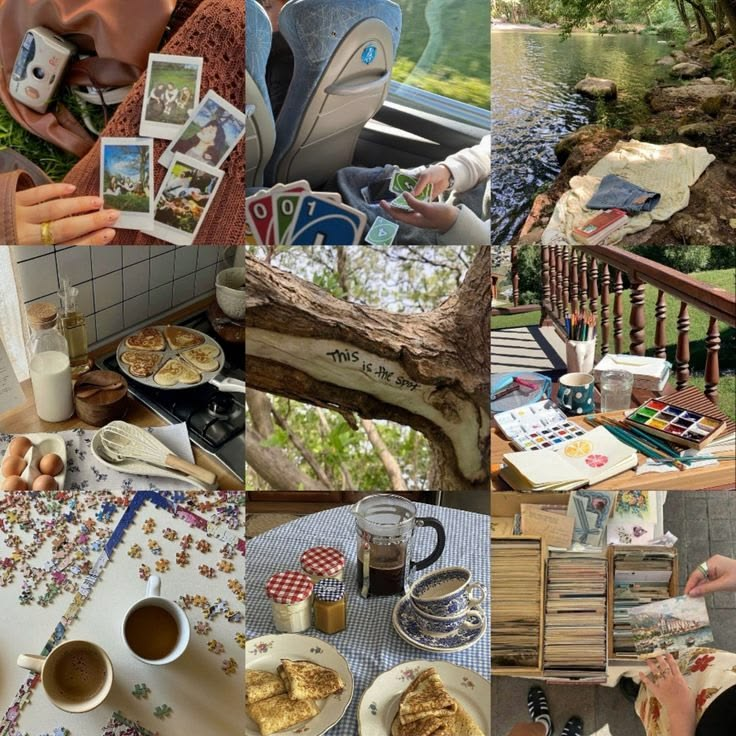
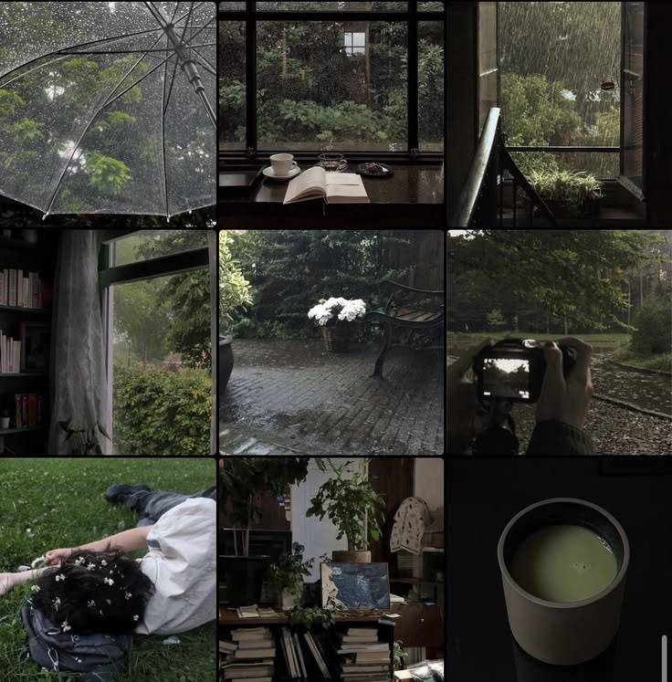
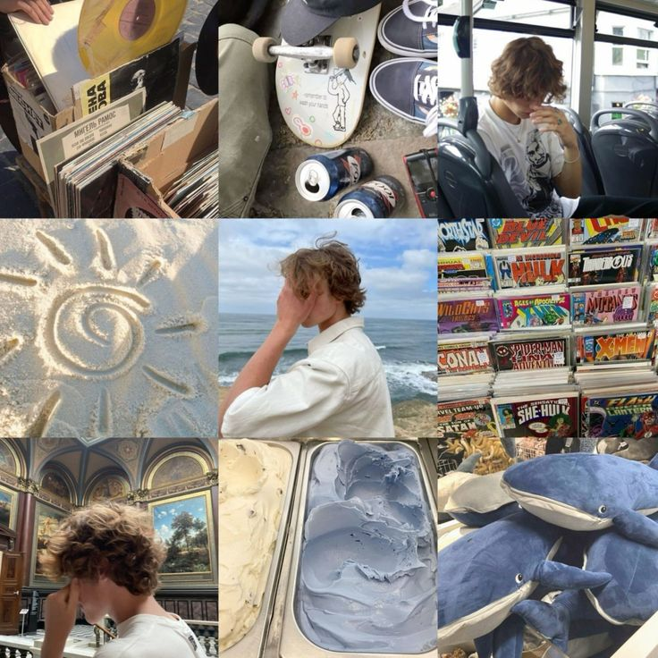
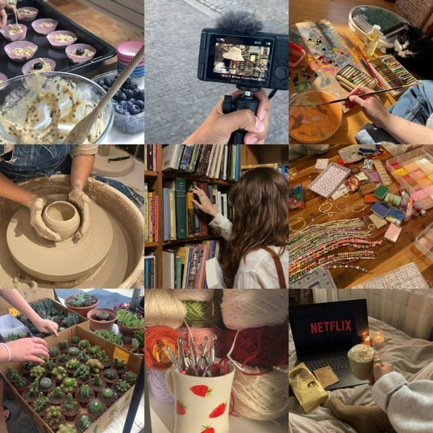
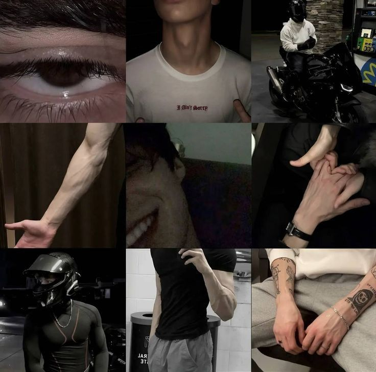
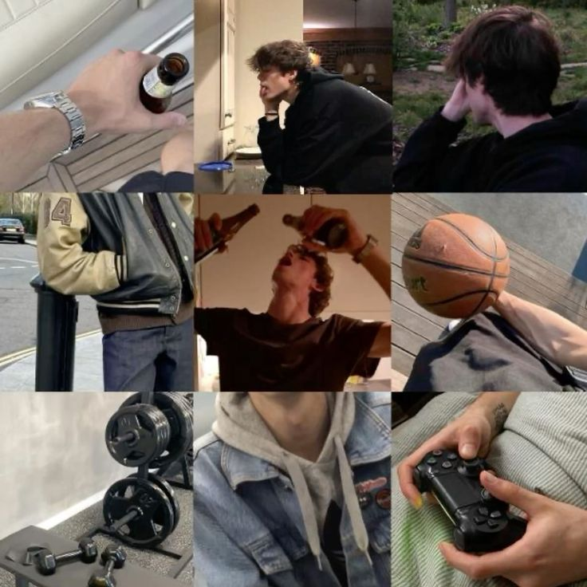

En desarrollo
Nueva Historia
Una nueva historia de romance ambientada en Perú. Historia con escenarios locales. Próximamente en Wattpad.
Próximamente“Escritora de historias nacidas de escenas, frases y emociones”
Romance contemporáneo
Una nueva historia de romance ambientada en Perú. Historia con escenarios locales. Próximamente en Wattpad.
PróximamenteHay personas que llevan toda la vida siendo amigos y nunca se preguntan por qué. Valentina y Sebastián son esas personas. Hasta que una noche lo cambia todo. Un video que ninguno recuerda. Una apuesta que ninguno debería haber firmado. Y trescientos sesenta y cinco días para demostrar que son más inteligentes que sus propios sentimientos. No lo son. Pero lo que construyen intentándolo es algo que ningún contrato podría haber anticipado. Una historia sobre lo que pasa cuando dejas de fingir que no lo sabes.
Leer en Wattpad →
FinalizadaKai llegó al gimnasio un martes como cualquier otro: con el casco bajo el brazo, el cabello aplastado, y esa manera de ocupar los espacios sin pedirle permiso a nadie. Yo llegué sin el teléfono, sin plan, y con la vaga idea de que hacer ejercicio por las mañanas me convertiría en una persona funcional. No me convertí. Pero sí terminé enamorándome de alguien que nunca decía demasiado - y que sin embargo siempre decía exactamente lo que necesitaba escuchar. Aunque a veces llegara tarde. Porque la única vez que bajó la guardia fue contigo.
Leer en Wattpad →
FinalizadaAmelia siempre creyó que los secretos se guardan como fotos viejas en un cajón: olvidados pero peligrosos si se desatan. Cuando llega Leo -carismático, misterioso y con una sonrisa que hace tambalear sus certezas-, su vida escolar se convierte en una ecuación de atracción y miedo. Entre promesas rotas, cartas que no fueron enviadas y una amistad que esconde algo más, Amelia deberá decidir si arriesga todo por un amor que puede sanarla... o destruirla.
Leer en Wattpad →Historias de 10 capítulos
Una historia sobre dos personas que se acercan lo suficiente para amarse, pero tardan demasiado en decírselo y sobre lo que cuesta aprender a nombrar lo que ya se siente.
Romance ambientado en escenarios locales peruanos
Cómo escribo mis historias
Tengo un archivo con ideas y borradores. Algunos son escenarios, otros son diálogos. De ahí nace la historia.
Defino la trama y personajes. Uso la estructura básica: inicio, desarrollo, clímax y cierre.
Escribo la historia sin preocuparme por signos o tildes. Me enfoco en narrar y dejar fluir la historia.
Reviso el borrador, corrijo detalles, perfecciono título y resumen, creo la portada y publico.
Dónde leer mis historias
Imágenes que me inspiran a escribir







